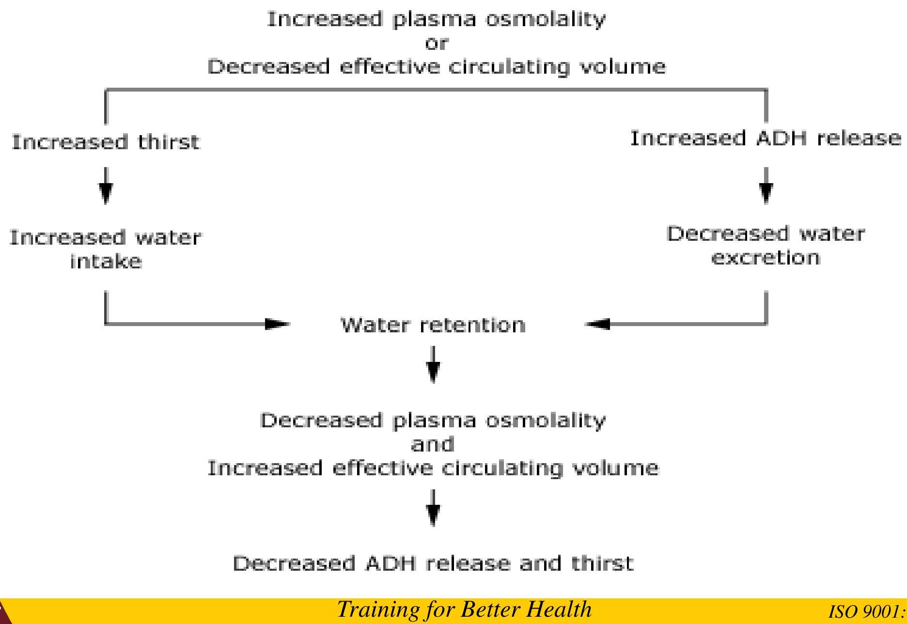

🧠
Topic 02
Pituitary Gland Disorders
01
The Pituitary Gland
- Located in sella turcica (hypophyseal fossa) of the sphenoid bone below the hypothalamus attached by a stalk.
- It consists of two main parts (lobes):
- ☑ Anterior pituitary (adenohypophysis)
- ☑ Posterior pituitary (neurohypophysis).
Two divisions:
- Anterior pituitary (adenohypophysis)
Pituitary secretes 9 hormones
- TSH
- ACTH
- FSH
- LH
- GH
- PRL
- MSH
The first four are “tropic” hormones, they regulate the function of other hormones
- Posterior pituitary (neurohypophysis)
- ADH (antidiuretic hormone), or vasopressin
- Oxytocin
Hormone Functions
The others from the anterior pituitary...
- GH (somatrotropic hormone) stimulates growth of skeletal epiphyseal plates and body to synthesize protein
- PRL stimulates mammary glands in breast to make milk
- MSH stimulates melanocytes; may increase mental alertness
Hypothalamus controls anterior pituitary hormone release
-
Releasing hormones (releasing factors)
- i. TRH(thyroid releasing hormone)--- release of TSH
- ii. CRH(corticotropin releasing hormone)---ACTH
- iii. GnRH (=LHRH)-- FSH and LH
- iv. PRF(prolactin releasing factor---cause release of PRL
- v. GHRH( gonadotropin releasing hormone)--- GH release
-
Inhibiting hormones
- i. PIF---inhibit Prolactin production
- ii. GH inhibiting hormone ---inhibit GH production.
02
Hypersecretion of Anterior Pituitary Hormones
- The most common cause is prolonged hypersecretion of growth hormone (GH), usually by a hormone-secreting pituitary tumour.
- The conditions are occasionally due to excess growth hormone releasing hormone (GHRH) secreted by the hypothalamus.
- As the tumour increases in size, compression of nearby structures may lead to hyposecretion of other pituitary hormones (from both lobes) and damage to the optic nerves, causing visual disturbances.
The effects of excess GH include:
- excessive growth of bones
- enlargement of internal organs
- formation of excess connective tissue
- enlargement of the heart and raised blood pressure
- reduced glucose tolerance and a predisposition to diabetes mellitus.
Gigantism
- occurs in children when there is excess GH while epiphyseal cartilages of long bones are still growing,
- i.e. before ossification of bones is complete. It is evident mainly in the bones of the limbs, and
- affected individuals may grow to heights of 2.1 to 2.4 m, although body proportions remain normal
- abnormally high linear growth due to excessive action of insulin like growth factor I (IGF-I) while the epiphyseal growth plates are open during childhood
Acromegaly
- This means ‘large extremities’ and occurs in adults when there is excess GH after ossification is complete.
- The bones become abnormally thick and there is also thickening of the soft tissues.
- These changes are most noticeable as coarse facial features but occurs after the growth plate cartilage fuses in adulthood.

Causes of excess GH
- pituitary adenomas or hyperplasia - 95% of pts with acromegaly have pituitary adenoma
- Hypothalamic tumors- increased GHRH
- Ectopic GHRH from tumors- ca lung, pancreas
Clinical features due to excess of GH/IGF-I
- Soft tissue swelling and enlargement of extremities
- Increase in ring and/or shoe size
- Hyperhidrosis (excessive sweating)
- Coarsening of facial features
- Prognathism (big jaws), widened space between incisor teeth
- Macroglossia
- Arthritis
- Bilateral carpal tunnel syndrome
- Increased incidence of obstructive sleep apnea - 60% of pts
- Increased incidence of glucose intolerance (80-90%) or frank diabetes mellitus - in 25% of pts, hypertension, and cardiovascular
03
Hyposecretion of Anterior Pituitary Hormones
Pituitary dwarfism
- This is caused by severe deficiency of GH, and possibly of other hormones, in childhood.
- The condition may be due to genetic abnormality or a tumor.
- Other causes of isolated GH deficiency are abnormalities of GH secreting cells, end organ unresponsiveness to GH and consequently a deficiency of circulating growth factors—ie growth hormone
Signs
- The individual is of small stature but is normally proportioned and cognitive development is not affected.
- Puberty is delayed and there may be episodes of hypoglycaemia.
General Hyposecretion
- The number of hormones involved and the extent of hyposecretion varies.
- Panhypopituitarism is the absence of all anterior pituitary hormones.
- Causes of hyposecretion include:
- tumours of the hypothalamus or pituitary
- trauma, usually caused by fractured base of skull, or surgery
- pressure caused by a tumour adjacent to the pituitary gland, e.g. glioma, meningioma
- infection, e.g. meningitis, encephalitis, syphilis
- ischaemic necrosis
Clinical features
- Depends on the hormone lost
- Acute s/s with pituitary apoplexy- pt presents with acute features of headaches, confusion, nuchal rigidity (neck stiffness).
- Pts with sheehans present with inability to lactate in the postpartum period.
Diagnosis
Assay hormone level
- FSH, LH & growth hormone are lost early
- TSH later
- ACTH lost last
04
Treatment: Hormone Replacement
TREATMENT- Hormone replacement.
| Hormone Deficit | Replacement Therapy |
|---|---|
| 1. ACTH |
|
| 2. TSH | Levothyroxine |
| 3. FSH/LH |
Males:
Females:
|
| 4. GH |
|
| 5. Vasopressin | Intranasal desmopressin (5–20 g twice daily) or Oral 300–600 g qd |
05
Posterior Pituitary & Diabetes Insipidus
Posterior pituitary
-
Release of:-
- ADH(vasopressin)
- OXYTOCIN
Disorders of the posterior pituitary
- Diabetes insipidus
- relatively rare condition usually caused by hyposecretion of ADH due to damage to the hypothalamus by, for example, trauma, tumour or encephalitis.
- Occasionally it occurs when the renal tubules fail to respond to ADH.
- Water reabsorption by the renal tubules is impaired, leading to excretion of excessive amounts of dilute urine, often more than 10 lt daily, causing dehydration and extreme thirst (polydipsia).
- Water balance is disturbed unless fluid intake is greatly increased to compensate for excess losses.
Functions and Regulation of ADH
Functions of ADH
- Regulates extracellular fluid volume by affecting renal handling of water → reduce free water clearance.
- vasoconstrictor & pressor agent (name "vasopressin").
- Decreased urine formation (hence, the antidiuretic action of "antidiuretic hormone").
Stimulation of ADH secretion
- Increase in plasma osmolality / cellular dehydration) is the most important stimulus - detected by hypothalamic osmoreceptors.
- Hypovolemia or decreased central venous pressure → decreased firing of atrial stretch receptors leading to increase in ADH release.
- Hypovolemia stimulates renin secretion and angiotensin formation. Angiotensin II also stimulates thirst and ADH secretion
- Other ADH RESERVE include nausea, pain and surgery

Classification of DI
- Cranial DI: - Deficiency of ADH- complete or partial
- Nephrogenic DI: - Renal resistance to ADH
- Primary polydipsia: - Polyuria due to excessive drinking (suppressed ADH due to <plasma osmolality)- psychological cause
CAUSES OF CENTRAL D.I
A. Familial (5%): Autosomal dominant (ADH gene)
B. DIDMOAD syndrome (DI, DM, optic atrophy, deafness)
C. Acquired:
- i. Trauma (head injury, hypothalamic/pituitary surgery)
- ii. Tumors (craniopharyngiomas, pituitary mets)
- iii. Inflammatory conditions (sarcoidosis, TB, histiocytosis, lymphocytic hypophysitis)
- iv. Infections (meningitis, encephalitis)
- V. Vascular (Sheehans, Sickle cell disease)
CAUSES OF NEPHROGENIC D.I
A. Familial:
- i. X-linked recessive (vasopressin receptor gene)
- ii. Autosomal recessive (acquaporin-2 gene)
B. Acquired:-
- i. Drugs (lithium)
- ii. Metabolic (hypokalemia, hypercalcemia)
- iii. Chronic renal disease (obstructive uropathy)
- iv. Systemic disorders e.g amyloidosis
CLINICAL PRESENTATION
- Adults: - polyuria, nocturia, thirst
- Children: - polyuria, enuresis, and failure to thrive
PATIENT EVALUATION
- Careful history. Confirm large urine output.
- Exclude hyperglycemia (DM), hypokalemia, hypercalcemia and significant renal disease
- Measure electrolytes + plasma and urine osmolality
- Water deprivation test
- MRI of hypothalamus and pituitary - CDI is suspected.
Treatment
Therapeutic Objectives
The objectives of therapy are
(1) to replace ADH (which is usually a long-term therapeutic program),
(2) to ensure adequate fluid replacement, and
(3) to identify and correct the underlying cause
- The treatment of choice is synthetic, long-acting ADH analogue (Desmopressin) {intranasal spray (5-100 mcg daily); parenteral injection (0.1-2.0 mcg daily); or oral (100-1000 mcg daily), in divided doses. }
- Dilutional hyponatremia is the most serious potential adverse effect.
- Primary polydipsia(PPD) - Treat underlying cause. Reduced fluid intake is only tx
- A thiazide diuretic to deplete sodium and increase renal water reabsorption
- Restriction of salt and protein intake